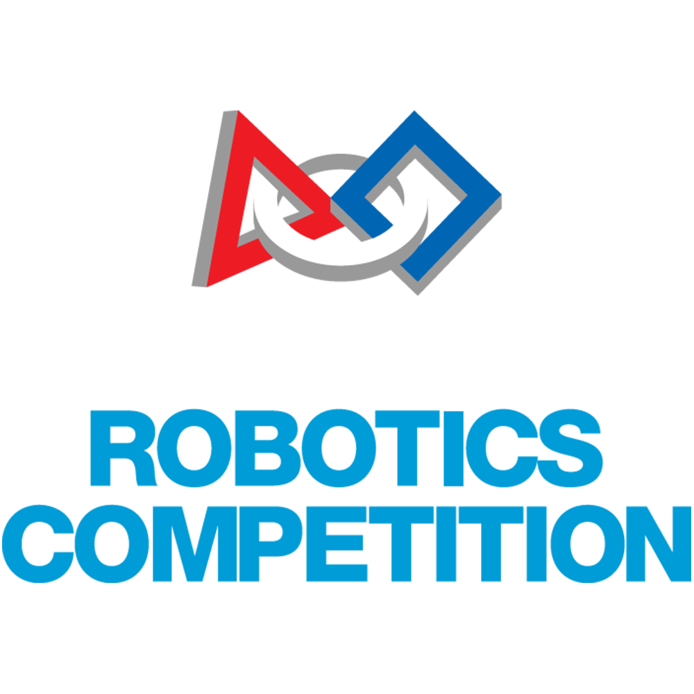

What is FIRST Robotics about?

FIRST Robotics Competition (FRC) is an international high school robotics competition. Each year, teams of high school students, coaches, and mentors work during a six-week period to build robots capable of competing in that year's game that weigh up to 125 pounds (57 kg). Robots complete tasks such as scoring balls into goals, placing inner tubes onto racks, hanging on bars, and balancing robots on balance beams. The game, along with the required set of tasks, changes annually.